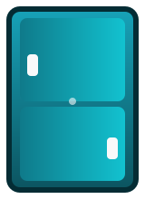

Sık Karşılaşılan Sorunlar
- Soğutmama veya dengesiz soğutma
- Aşırı buzlanma ve karlanma
- Su kaçağı ve drenaj hattı tıkanıklığı
- Gürültülü çalışma ve kompresör arızaları

Adana'nın tüm ilçelerinde buzdolabı arızalarına yerinde müdahale eden uzman ekibimiz, soğutma performansını en hızlı şekilde geri kazandırır.
Cihaz geçmişini analiz ederek sensör, fan, motor ve elektronik kart kontrollerini yapar; verimliliği artırmak için periyodik bakım önerileri sunarız.
Hata kodunu cihaz ekranında gördüğünüzde hızlıca çözüm bulmanız için kısa açıklamalar hazırladık.
Olası Sebepler: Sensör kablosu kopması, sensör direnci değişimi.
Çözüm: Cihazı kapatıp yeniden başlatın. Sorun devam ederse sensör ölçümü ve değişimi için servis çağırın.
Olası Sebepler: Defrost rezistansı, zamanlayıcı veya sensör arızası.
Çözüm: Manuel buz çözme yapın; buzlanma devam ediyorsa uzman kontrolü gerektirir.
Olası Sebepler: Fan motoru arızası, kondenser kirliği.
Çözüm: Cihazın arkasını havalandırın, kondenser temizliği için servis talep edin.
Adana genelinde hizmet veren mobil ekiplerimiz, ilçenize göre planlama yaparak cihazın aynı gün onarımını hedefler.
Kompresör, fan, sensör ve elektronik kart için test cihazlarıyla ölçüm yapar, onarım veya değişim seçeneklerini raporlarız.
Parça değişimlerinde 1 yıl, işçilikte 6 ay garanti sunarız. Tüm işlemler Google politikalarına uygun şekilde belgeye dökülür.